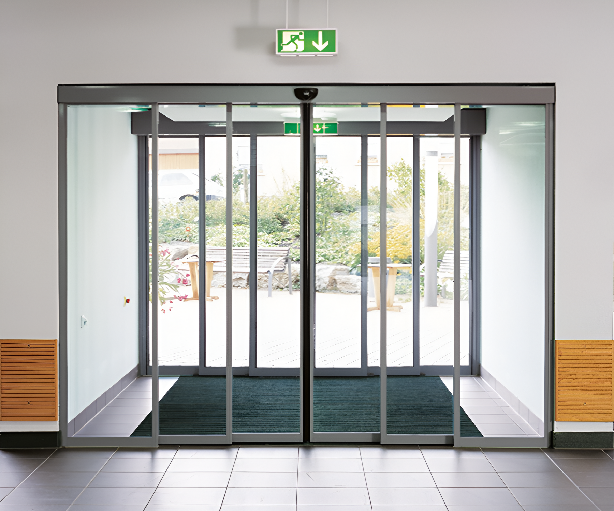

Otomatik Alüminyum Kapı Sistemlerimiz
Her proje için özel otomatik kapı çözümleri

Hareket Sensörlü Kapılar
Hareket algılama sensörleri ile otomatik açılıp kapanan alüminyum kapı sistemleri.
- Hareket algılama
- Otomatik açılım
- Güvenlik sensörleri
- Kolay kullanım

Dokunmatik Kontrollü Kapılar
Dokunmatik panel ve uzaktan kumanda ile kontrol edilen otomatik alüminyum kapı sistemleri.
- Dokunmatik panel
- Uzaktan kumanda
- Akıllı kontrol
- Enerji verimliliği